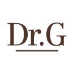

홈 > 브랜드 매거진 > 닥터지
닥터지
닥터지(Dr.G)는 고운세상코스메틱이 운영하는 더마코스메틱 스킨케어 브랜드다.
산업 분야 뷰티·퍼스널케어 · 공개 등급 자료 기반 · 브랜드 평가 4.1 ★

한눈에 보는 브랜드
닥터지(Dr.G)는 피부과 전문의가 만든 한국의 대표 더마코스메틱 스킨케어 브랜드다. 피부과 전문의 안건영 박사가 1998년 개원한 고운세상 피부과를 모태로, 2003년 고운세상코스메틱이 일반 소비자용으로 브랜드를 본격화하며 출발했다.
첫 전환점은 저자극 자외선차단제가 입소문을 타며 선크림 카테고리의 상징으로 자리 잡은 일이고, 두 번째 전환점은 2018년 스위스 미그로 계열 미벨이 지분을 인수한 뒤 2025년 글로벌 화장품 그룹 로레알로 소유가 넘어간 일이다. 한국에서 더마 카테고리 정상권을 지키며 연 매출 천억원대 규모로 성장했다.
브랜드 관점
닥터지를 이해하는 핵심은 진료실에서 출발했다는 점이다. 화장품 부작용으로 고생하는 환자를 진료하던 의사가 직접 처방하듯 제품을 설계했고, 수만 건의 피부 고민 데이터가 제형 개발의 근거가 됐다.
차별점은 두 갈래다. 첫째는 저자극 선크림으로, 자극 없이 매일 바를 수 있다는 신뢰가 쌓이며 '선크림은 닥터지'라는 인식을 만들어 카테고리 1위권을 굳혔다.
둘째는 민감성과 트러블에 특화된 진정 라인으로, 화장품과 의약적 신뢰를 잇는 더마 포지션을 잡았다. 전략적으로는 효능을 앞세우되 가격은 대중이 감당할 수 있는 수준으로 묶어 대형 헬스앤뷰티 채널에서 회전율을 끌어올렸다.
한국 독자에게 이 브랜드는 더마 화장품이 의사 개인의 임상에서 시작해 글로벌 자본에 인수되는 K뷰티 성장 공식을 압축해 보여주는 사례다. 더마 시장이 수천억에서 수조원대로 급팽창한 흐름 속에서, 의사 발(發) 신뢰가 어떻게 산업적 자산으로 환산되는지를 가늠하는 좌표가 된다.
시작과 성장
브랜드의 뿌리는 미용 피부과학이 한국에서 막 제도화되던 1990년대 말로 거슬러 올라간다. 어린 시절 화상 흉터로 고생한 경험이 안건영 박사를 피부과 의사로 이끌었고, 그는 1998년 서울에 미용 중심 피부과를 개원했다.
진료 현장에서 화장품 부작용으로 트러블을 얻은 환자를 거듭 마주하며, 환자에게 안심하고 권할 제품을 직접 만들겠다는 발상으로 화장품 개발에 나섰다. 첫 제품은 환자에게만 건네던 자외선차단제였고, 이 처방형 접근이 곧 일반 소비자 시장으로 확장됐다.
2003년 고운세상코스메틱이 독립 법인으로 자리를 잡으며 닥터지 브랜드를 일반 판매로 본격화한 것이 첫 번째 전환점이다. 이후 저자극 선크림이 폭발적으로 팔리며 더마 선케어의 표준으로 올라섰고, 블랙 스네일과 레드 블레미쉬 같은 진정·탄력 라인이 누적 수천만 개 단위로 팔리며 브랜드를 키웠다.
두 번째 전환점은 자본의 국제화로, 2018년 스위스 미그로 계열 미벨이 지분을 인수해 아시아 확장의 발판으로 삼았다. 이 시기를 거치며 닥터지는 국내 더마 정상권 브랜드이자 범아시아 확장 후보로 성장했다.
브랜드 아이덴티티
닥터지의 핵심 가치는 '누구나 피부를 건강하게'라는 슬로건에 응축돼 있다. 의학적 지식으로 사람을 돕는다는 창업자의 미션을 그대로 브랜드 약속으로 옮겨, 화려함보다 임상적 신뢰와 저자극 안전성을 전면에 둔다.
비주얼 아이덴티티는 의사가 처방하는 분위기의 절제된 톤으로, 군더더기 없는 패키지와 성분 중심 표기를 통해 더마라는 범주를 시각적으로 전달한다. 브랜드 이름의 G는 피부과학으로 세상을 건강하게 만든다는 지향을 담아 의사·과학 이미지와 연결된다.
타깃은 민감성과 트러블로 일반 화장품에 부담을 느끼는 소비자, 매일 쓰는 선케어에서 자극 없는 선택지를 찾는 폭넓은 연령층이다. 보이스는 진료실에서 환자를 대하듯 차분하고 신중하며, 효능을 과장하지 않고 안심을 설득하는 어조를 유지한다.
제품과 서비스
현재 상태
본사는 서울 소재 고운세상코스메틱이며, 닥터지는 이 회사의 대표 브랜드다. 지배구조는 2018년 스위스 미그로 계열 미벨이 지분을 인수한 뒤, 2025년 글로벌 화장품 그룹 로레알이 인수해 로레알 컨슈머 프로덕트 사업부로 편입됐다.
인수 금액은 미공개다. 모회사 연 매출은 약 2천260억원 규모로 알려졌고 이 가운데 대부분을 닥터지 브랜드가 책임지며, 닥터지 단일 매출은 한 해 1천766억원을 기록한 바 있다.
로레알 인수 이후 회사는 일부 비주력 브랜드 운영을 정리하고 닥터지에 역량을 집중하는 방향으로 재편됐다.
타임라인
정리된 연도형 이벤트가 없습니다.
BI/CI 변천사
함께 읽을 브랜드
 뷰티·퍼스널케어 · 자료 기반라운드랩
뷰티·퍼스널케어 · 자료 기반라운드랩라운드랩(ROUND LAB)은 서린컴퍼니가 2017년 선보인 대한민국의 저자극 스킨케어 브랜드다. '1025 독도 토너' 등 순한 기초 라인으로 알려진 클린 뷰티 브...
 뷰티·퍼스널케어 · 자료 기반아누아
뷰티·퍼스널케어 · 자료 기반아누아아누아(Anua)는 더파운더즈가 전개하는 대한민국의 저자극 스킨케어 브랜드다. 어성초를 핵심 성분으로 한 진정 토너로 미국·일본 등에서 인기를 얻은 K-뷰티 브랜드다...
 뷰티·퍼스널케어 · 매거진 완성러쉬
뷰티·퍼스널케어 · 매거진 완성러쉬러쉬는 영국의 뷰티·퍼스널케어 브랜드로, 성분, 사용감, 패키지, 이미지 언어가 구매 판단에 직접 연결되는 영역입니다.
 뷰티·퍼스널케어 · 편집 검수니베아
뷰티·퍼스널케어 · 편집 검수니베아니베아(NIVEA)는 1911년 독일 바이어스도르프(Beiersdorf)가 출시한 글로벌 스킨케어 브랜드다. 세계 최초의 안정적인 유중수(油中水) 유화 크림을 선보이...
 뷰티·퍼스널케어 · 자료 기반코스맥스
뷰티·퍼스널케어 · 자료 기반코스맥스코스맥스(COSMAX)는 1992년 설립된 한국의 화장품 ODM 기업으로, 세계 1위 화장품 ODM 제조사로 꼽힌다.
 뷰티·퍼스널케어 · 자료 기반코스알엑스
뷰티·퍼스널케어 · 자료 기반코스알엑스코스알엑스(COSRX)는 2013년 설립된 한국의 민감성 피부용 스킨케어 브랜드로, 현재 아모레퍼시픽 자회사다.
키엘(Kiehl's)은 1851년 미국 뉴욕에서 약방으로 출발한 스킨케어 브랜드다. 옛 약제상(apothecary) 헤리티지를 바탕으로 한 미니멀한 제품으로 알려졌으...
 뷰티·퍼스널케어 · 디렉토리올리브영
뷰티·퍼스널케어 · 디렉토리올리브영올리브영은 대한민국의 헬스앤뷰티 리테일 브랜드입니다. 화장품, 스킨케어, 건강식품, 퍼스널케어 상품을 큐레이션하며 K뷰티 유통의 대표 접점으로 자리 잡았습니다.